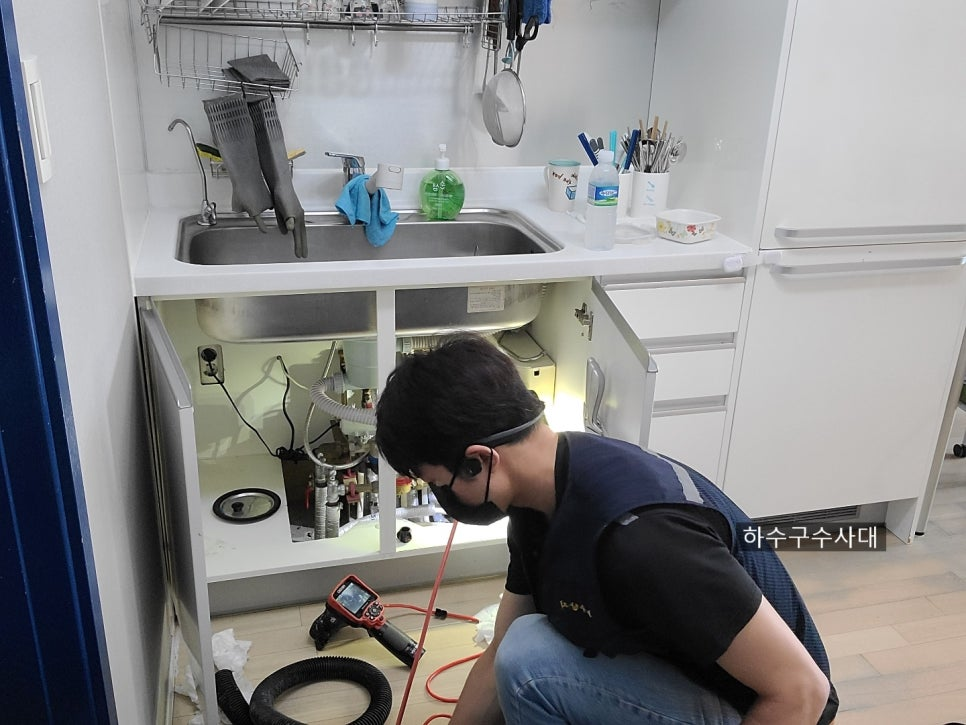
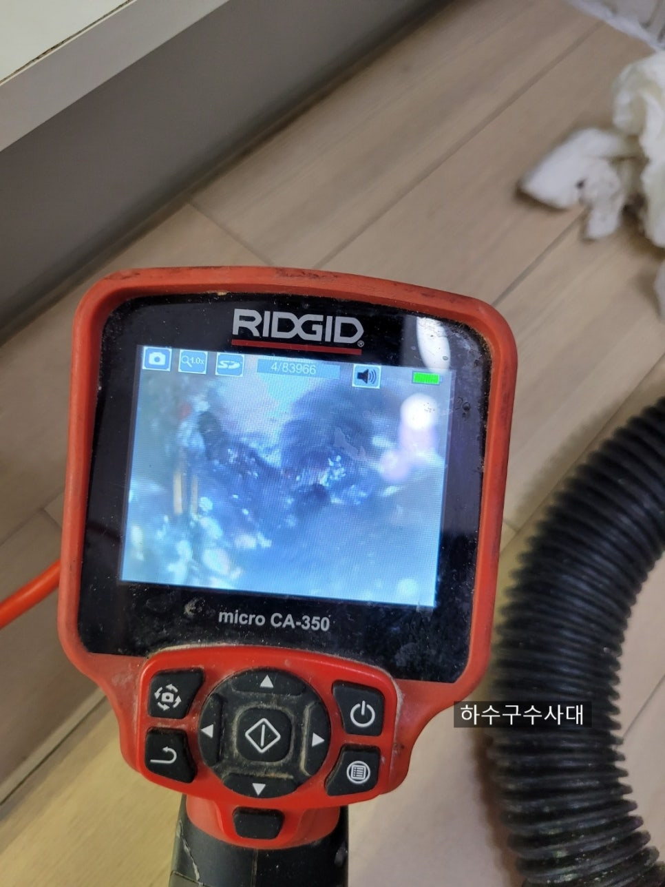
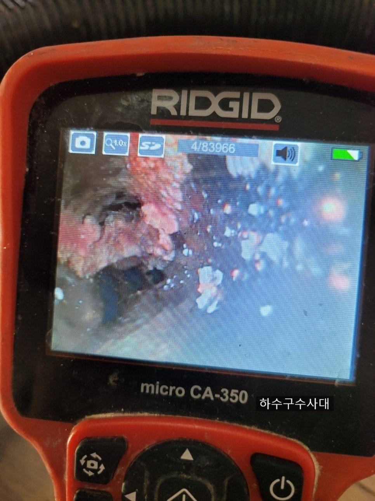
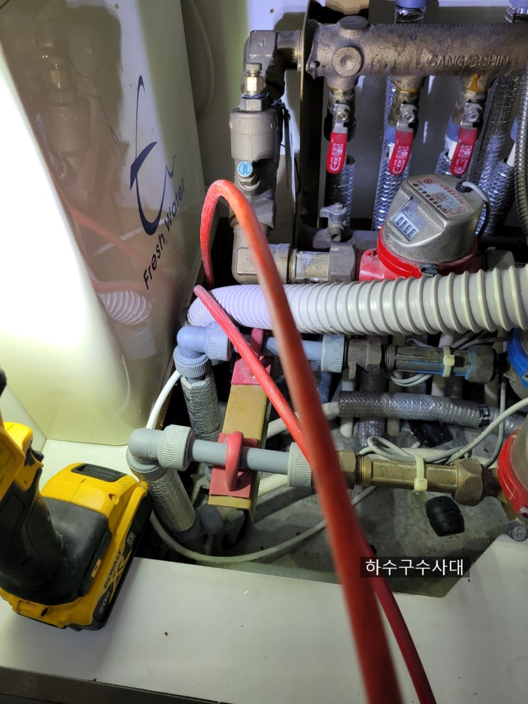
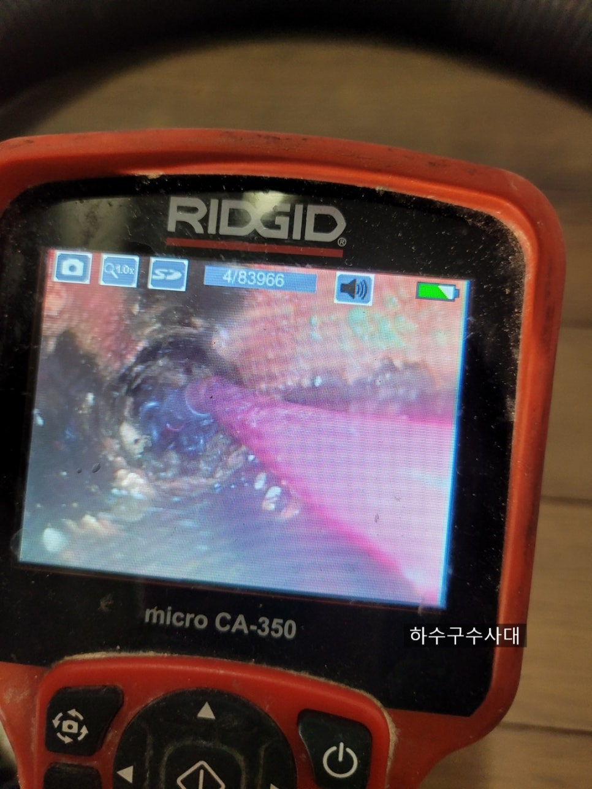
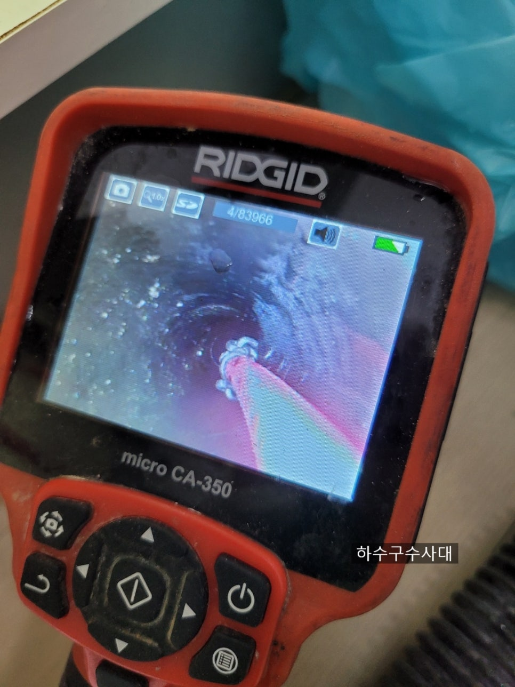
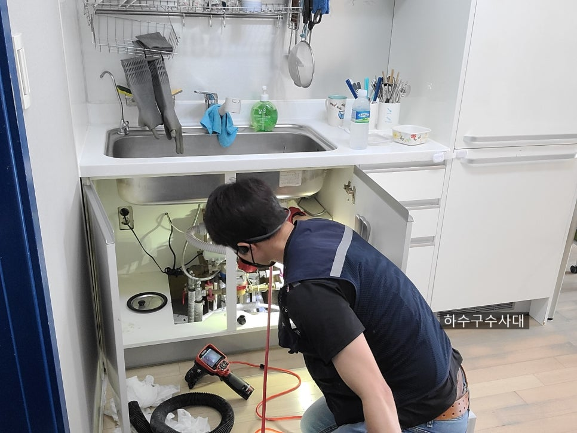

🏠 광교싱크대막힘 배관청소 싱크대역류 해결
서울 싱크대막힘 전문 시공 후기

📋 작업 개요
- 위치: 서울
- 서비스 유형: 싱크대막힘, 하수구막힘, 배관막힘, 누수수리, 역류해결, 배관청소, 고압세척
- 작업 일시: 2021. 6. 20. 23:43
- 업체명: 하수구수사대 (010-5615-2118)
🔍 문제 상황
안녕하세요
하수구수사대 입니다.
오늘은 일요일인데 잘 쉬셨는지요?
저는 평일에 쉬고 일요일에 일을 하고
있어서 오늘도 싱크대막혔다는 고객님의
연락을 받고 출동하였습니다.
광교싱크대막힘 현장인데요.
주말이라 가족분들이 모두 집에서
음식을 만들던중 싱크대배관에서
역류를 했다고 합니다.
내시경검수
우선 내시경으로 배관상태를
점검하였습니다.
배관내부사진
싱크대배관 물이 나가는
구멍이 손가락하나 크기정도만하게
나있고 기름이 꽉막고 있습니다.
아무래도 구조가 문제가 있는듯합니다.
막히는 시점은 다르겠지만
구조적으로 문제가 있는 배관들은
관리를 하지 않는다면 막히는게
불보듯 뻔합니다.
어떤음식을 하느냐 어떻게 사용을 하느냐

🔎 원인 분석
💡 전문가 진단: 광교싱크대막힘 배관청소 싱크대역류 해결
관리를 하느냐에 따라 사용기간과
막힘증상이 다르겠지만
대부분 구조적으로 배관을
내시경으로 일부러 보지않는다면
막히는건 시간문제라고 생각합니다.
그래서 싱크대배관도 관리가 필요합니다.
내부사진
관리는 배관에 기름이 적은상태에
시작해야합니다.
만약 기름이 위사진처럼 많이
붙어있다면 막힘증상이 악화될수
있습니다.
배관스케일링
배관스케일링을 하기위해
내시경과 장비를 같이 투입시킵니다.
앞에 체인이 회전을하면서
배관벽에 붙어있는 기름들을
제거해 나갑니다.
간혹 스프링구멍만 내는 업체가
있는데 배관에 기름기가
남아있다면 언젠가는 막힘증상이
나타날 우려가 많습니다.
싱크대막힘 만큼은 확실하게

🔧 작업 과정
해결하시길 바랍니다.
광교싱크대막힘 배관청소 싱크대역류 해결
어느 고객님께서는 내시경이
없는 업체를 불러 스프링으로만
작업을하고 물이 잘나가는것을
확인하고 됐다고 생각하셨답니다.
하지만 몇개월되지않아 밑에집에서
누수가 생기어 천장벽지며 물어줘야할게
백만원이상 나간다면 속상해하셨던
분도 계셨습니다.
싱크대막힘 만큼은 비용이 들더라도
확실하게 청소하시길 권해드립니다.
스케일링
1차적으로 깨끗해진 배관이 보이시나요?
배관구조가 꺽여나가는 구조여서
처음 진입한곳은 기울기가 좋습니다.
물이차있음 역구배
하지만 한번꺽어지면서
구배가 좋지 않아 물이 고여있습니다.
이렇게되면 이구간에 기름이
붙을 확률이 높습니다.
꺽어지면서 물의 흐름을 방해하고
정체되는 현상이 생기게 됩니다
한달에 한번 뚜러펑을 펑크린등 배관세척을
위한 액체를 넣어 관리가 필요한 현장입니다.
평상시 설거지를 할때도
물을 충분히 내려보내 기름이 정체되지
않게 신경써주시고 특히 돼지기름,소기름같은
굳는 성분들은 휴지로 닦아
버리는 습관이 중요합니다.
특히소기름은 잘못넣으면 바로 응고되어
배관에서 막힘증상이 나타나므로
조심하여야합니다.
세척완료
깨끗하게 세척하여 고객님께
내시경으로 배관을 보여드리니


✅ 작업 완료
속이 후련하다고 하시네요^^
물을 받아서 내려봅니다.
시원하게 내려가는 것을
봐야 속이 풀리는 하수구수사대입니다^^
하수구수사대
서울/경기/인천
010-2340-2118
저희 하수구수사대는
서울/경기/인천 전지역 방문가능하오니
막힘해결이 필요할땐 연락주세요.




⚠️ 베란다 누수 및 방수 관리 방법
- ✅ 비가 많이 올 때 창틀 주변이나 아래층 천장에 얼룩이 생기는지 정기적으로 확인해 보세요.
- ✅ 우수관 주변 실리콘 마감이 들뜨거나 깨진 틈새가 있는지 손상 여부를 수시로 체크하세요.
- ✅ 베란다 바닥 타일의 줄눈(메지)이 소실되면 그 틈으로 물이 침투하여 누수가 유발됩니다.
- ✅ 누수 의심 증상 발견 시 방치하면 아래층 손실이 커지므로 즉시 전문가의 진단을 받으십시오.
💡 핵심 정리
- 확실한 장비 작업(내시경 점검 및 샤프트 스케일링)으로 원인을 뿌리 뽑습니다.
- 작업 후 1년 이내에 동일한 부위 재발 시 100% 무상 A/S 서비스를 보장합니다.
- 서울 · 경기 · 인천 전 지역에 24시간 언제든 긴급 출동할 수 있도록 항시 대기 중입니다.
❓ 자주 묻는 질문 (FAQ)
🚨 서울 싱크대막힘 문제로 고민이신가요?
정확한 원인 진단과 확실한 시공으로 재발 없는 해결을 약속드립니다.
24시간 긴급 출동 | 서울 · 경기 · 인천 전지역 | 1년 내 재발 시 무상 A/S